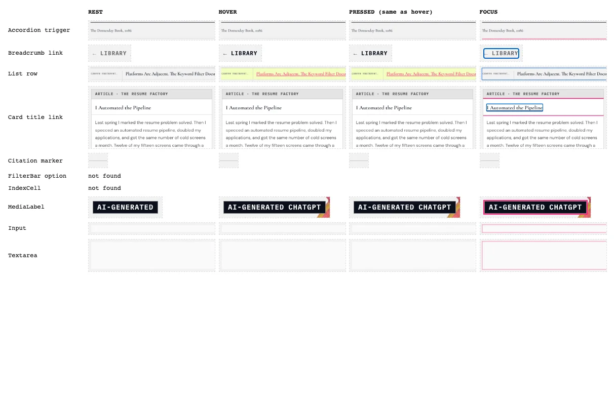
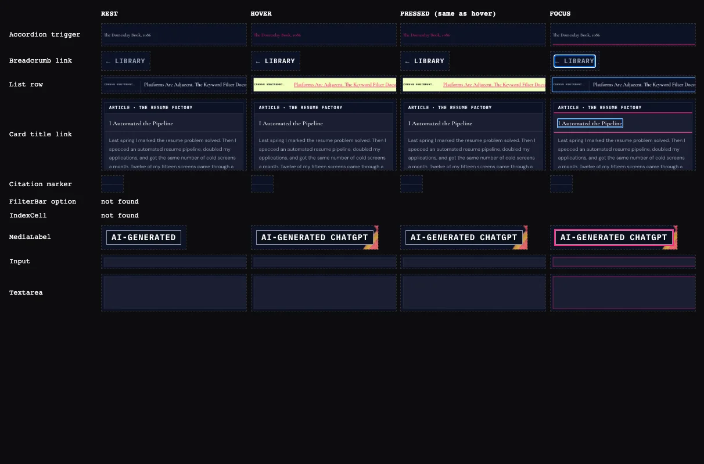

ST-252 · Interaction states for links, rows, disclosures and fields
Issue #252, from the audit in #250 and the contract in #251. Phase 0 visual spec. Class names are the production names, scoped here under a vspec wrapper so same-named classes from different components do not collide. Values are tokens unless marked.
apps/web/src/ or packages/design-system/src/ changes until the Phase 0 boxes are ticked. Open decisions are in section 9. Sidebar and SidebarNav are drawn from the CSS and are not yet rendered-probed (decision 8).1. Interactive prototype
The Behaviour dropdown shows all five states or one at a time. The matrix forces each state so it can be seen without hovering. The live row uses real browser states: hover, press and Tab to try them, and click the accordion trigger and the sidebar toggle. Use the toggle above for dark. Rows with no open state show "not a toggle".
Live row (real hover, press and keyboard focus)
2. Before and after


Section 1: a pressed state on every interactive row, hover where it is missing, an open state on Accordion and Sidebar, one focus ring, light and dark.
3. Behaviour annotations
Applies to the Sidebar toggle and PageSidebar (the anchor-bearing surfaces in scope). The Accordion trigger and the Breadcrumb are listed too, since each changes what a click does visually.
| Item | Spec |
|---|---|
| Active state | Sidebar toggle open: the arrow turns pink and rotates 90 degrees (the rotation exists; the pink is new). Accordion open: the item's bottom rule turns pink and the chevron stays pink and rotated (the chevron exists). Breadcrumb: the last crumb is the current page and is not a link, so it has no states. |
| Hash/anchor behaviour | None added. Accordion and Sidebar toggles change visibility only; the URL does not change (same as today). |
| Scroll-spy | None. PageSidebar related and series links navigate away; there is no in-page active item. |
| Sticky/fixed | Unchanged. Sidebar panel stays sticky on desktop as today; this epic changes states only. |
| Mobile collapse | Unchanged. The Sidebar collapses to the disclosure toggle below its breakpoint; the toggle gets hover, pressed and open styling. On touch there is no hover, so pressed is the visible feedback. |
| Click side-effects | Unchanged. Accordion and Sidebar toggle open or close their panel; links navigate. Pressed shows only while the pointer button is down. |
4. Contrast, measured
Measured on this vspec, 2026-11-24, with transitions switched off so no value is read mid-fade. Text needs 4.5:1, non-text 3:1. "With shade" composites --st-state-pressed-shade (text-default at 12%) over the background. The three hover looks that failed in the live build are redrawn as passing here (decision 10).
| Pair | Light ratio | Dark ratio | Verdict |
|---|---|---|---|
| Accordion label, rest | 18.35 | 15.17 | Pass (4.5:1) |
| Accordion label, hover | 18.35 | 15.17 | Pass (4.5:1) |
| Accordion chevron, hover | 3.47 | 4.45 | Pass (3:1) |
| Accordion label, pressed (with shade) | 14.21 | 10.61 | Pass (4.5:1) |
| Accordion open rule | 3.47 | 4.45 | Pass (3:1) |
| Breadcrumb link, rest | 5.01 | 6.28 | Pass (4.5:1) |
| Breadcrumb link, hover | 18.35 | 15.17 | Pass (4.5:1) |
| Breadcrumb link, pressed | 18.35 | 15.17 | Pass (4.5:1) |
| List title, hover (on lime wash) | 18.09 | 18.09 | Pass (4.5:1) |
| List title, pressed (wash plus shade) | 14.01 | 18.08 | Pass (4.5:1) |
| List date, hover | 4.94 | 18.09 | Pass (4.5:1) |
| Card title, rest | 19.16 | 12.76 | Pass (4.5:1) |
| Card title, pressed (with shade) | 14.81 | 8.85 | Pass (4.5:1) |
| Card pressed border | 3.47 | 4.45 | Pass (3:1) |
| Citation back-link, rest (existing, out of scope) | 5.87 | 4.45 | Fail (4.5:1) |
| Citation back-link, pressed | 18.35 | 15.17 | Pass (4.5:1) |
| Citation marker, pressed (with shade) | 17.12 | 17.5 | Pass (4.5:1) |
| FilterBar name, rest | 18.35 | 15.17 | Pass (4.5:1) |
| FilterBar name, hover | 18.35 | 15.17 | Pass (4.5:1) |
| FilterBar name, pressed (with shade) | 14.21 | 10.61 | Pass (4.5:1) |
| FilterBar box border, hover | 3.47 | 4.45 | Pass (3:1) |
| Clear-all label, rest | 5.01 | 6.28 | Pass (4.5:1) |
| Clear-all label, pressed (with shade) | 14.21 | 10.61 | Pass (4.5:1) |
| Clear-all border, rest | 3.44 | 5.09 | Pass (3:1) |
| IndexCell label, rest | 5.01 | 6.28 | Pass (4.5:1) |
| IndexCell border, rest | 3.44 | 5.09 | Pass (3:1) |
| IndexCell label, hover | 18.35 | 15.17 | Pass (4.5:1) |
| IndexCell border, hover | 3.47 | 4.45 | Pass (3:1) |
| IndexCell label, selected | 17.12 | 17.5 | Pass (4.5:1) |
| IndexCell label, pressed (with shade) | 14.21 | 10.61 | Pass (4.5:1) |
| MediaLabel label, hover | 18.75 | 12.08 | Pass (4.5:1) |
| MediaLabel border, hover | 3.47 | 4.45 | Pass (3:1) |
| Input text, rest | 18.35 | 12.76 | Pass (4.5:1) |
| Input border, hover | 7.49 | 3.18 | Pass (3:1) |
| Textarea border, hover | 7.49 | 3.18 | Pass (3:1) |
| Sidebar toggle label, rest | 18.35 | 15.17 | Pass (4.5:1) |
| Sidebar toggle label, hover | 18.35 | 15.17 | Pass (4.5:1) |
| Sidebar toggle arrow, hover | 3.47 | 4.45 | Pass (3:1) |
| Sidebar toggle label, pressed (with shade) | 14.21 | 10.61 | Pass (4.5:1) |
| Sidebar open arrow | 3.47 | 4.45 | Pass (3:1) |
| PageSidebar link, hover | 18.35 | 15.17 | Pass (4.5:1) |
| PageSidebar link, pressed | 18.35 | 15.17 | Pass (4.5:1) |
One failing row is not new. The Citation back-link resting colour is 4.45:1 in dark today (--st-color-link-default). This epic does not change resting looks, so it is listed for a follow-up issue at close-out rather than fixed here.
Command: the browser script in docs/conventions/vspec-rules.md (composites every ancestor background over white), run with Playwright against this file, with the pair list in the session scratchpad. pnpm validate:contrast does not check pairs a vspec composes itself.
5. Class naming table
| Class | Closest existing pattern | Decision |
|---|---|---|
.itemOpen | Accordion .chevronOpen, .panelOpen; already referenced by Accordion.tsx and listed as dead in validate-dead-refs.js | Define it (bottom rule turns pink). Removes one dead reference. |
.accordionNumbered | Accordion .triggerNumbered already styles the numbered layout | Do not define. Remove the reference from Accordion.tsx and from the dead list. See decision 3. |
Every other class in section 1 (.link, .rowLink, .titleLink, .markerLink, .backLink, .optionLabel, .clearAllButton, .cell, .mediaLabel, .input, .textarea, .toggle) | Same names in each component's own module | Existing. Add :active or :hover rules only. No new class. |
No class is named after a content type. Vspec-only classes use the vspec prefix. The pressed rule is the same line everywhere: box-shadow: inset 0 0 0 100px var(--st-state-pressed-shade).
6. Component choice audit
| Surface | What exists | Extend or replace | Why |
|---|---|---|---|
| Accordion, Breadcrumb, List, Card, Citation, FilterBar, IndexCell, MediaLabel, Input, Textarea, Sidebar | Each is a DS component in packages/design-system/src/components/ with hover and focus rules of its own | Extend | Missing states only; resting looks do not change (epic Non-Goals). No new component. |
| Field | Field.module.css, 0 state rules | No change | A wrapper around a label, a control and helper text; the control carries the states (audit, epic doc). |
| SidebarNav, PageSidebar (web-only) | apps/web/src/components/PageSidebar.module.css: link hover only (.relatedLink, .seriesLink, .ethicsLink) | Extend in place | Link classes get the text-link pressed rule. Whether SidebarNav exists as a separate file is checked in the probe (decision 8). |
7. Token list
| Role | Tokens |
|---|---|
| Pressed shade (from #251) | --st-state-pressed-shade (inset shadow on rows, toggles, cards and controls; text links use colour and underline weight instead, since a shade under text is invisible) |
| Focus | --st-focus-ring, --st-focus-ring-offset; List rows use a negative offset so the ring stays inside the row |
| Hover edge and text | --st-color-pink, --st-color-brand-primary, --st-color-text-default, --st-color-border-strong (field hover), --st-color-lime-100 (List row, existing) |
| Open | --st-color-pink (Accordion rule, Sidebar arrow), --st-color-text-default and --st-color-bg-canvas (IndexCell selected, as the #251 toggles) |
| Rest border for IndexCell and Clear all | --st-chip-border in place of --st-index-cell-inactive-color, as #251 did for IconButton |
| New tokens | None. |
8. Governance checks
| Check | Applies | Evidence |
|---|---|---|
| Phase 0 trigger (unreviewed visual format) | Yes: new pressed looks on rows, links, cards, fields | This vspec; Before images dated 2026-11-24 |
| Nav annotations (six) | Yes, Sidebar toggle and PageSidebar | Section 3 |
| Interactive prototype | Yes: expand or collapse | Section 1, vanilla JS |
| CSS class reuse audit | Yes | Section 5; one class defined, no new patterns |
| Component choice audit | Yes | Section 6; no new component |
| Content Write Gate | No | No Sanity writes |
| Rule-file write gate | No | No rule file changes |
| Diagram red-pen gate | No | No diagram |
9. Decisions answered
An approval of this vspec as drawn takes the recommended answer for every open decision. Approved as drawn, 2026-11-24.
- Pressed on rows and cards: the #251 shade, drawn inset, with the label in text-default so the shade never lands under pink text. Text-only links (Breadcrumb, Citation back-link, PageSidebar links) get no shade: pressed is text-default with a 2px underline. Answered as drawn, 2026-11-24.
- Hover on Accordion (light): the light-theme
.triggercolour rule outranks the existing hover, which is why light shows nothing. Move the hover to the label (text-default plus underline) and the chevron (brand-primary). Cost: one selector change inAccordion.module.css. Answered as drawn, 2026-11-24. - Accordion open state: bottom rule turns pink (
.itemOpen); the pink chevron already exists..accordionNumberedis dropped, not defined, because.triggerNumberedalready carries the numbered layout. Alternative: a pink left bar on the open item (larger visual change). Answered as drawn, 2026-11-24. - Breadcrumb and List focus: both render a ring from a global rule today. Recommended: add the DS focus rule to each module so they own it and survive the global rule being removed. Alternative: leave them, since users already see a ring. Cost: two small rules. Answered as drawn (add), 2026-11-24.
- Card pressed: hover look with the lift removed, a pink border and the shade, as #251's toggles. The card is one click target through the title link, so the whole card shows the state. Answered as drawn, 2026-11-24.
- Inputs and Textareas: hover gets a stronger border (border-strong); pressed is not defined, because a mouse-down on a field is focus (audit). Error and disabled stay as they are (Non-Goals). Answered as drawn, 2026-11-24.
- MediaLabel: it is not a control (
cursor: default, reveals detail on hover and focus), so it gets a pink hover border and no pressed state. Alternative: no hover border either; the detail reveal is the hover signal. Answered as drawn (pink border), 2026-11-24. - Sidebar and SidebarNav are not yet probed. The mobile toggle was hidden at 375px on /about and SidebarNav was not located. Recommended: probe both before Phase 1 and amend this vspec if the probe contradicts rows 11 and 12. Answered as drawn, 2026-11-24: probe both before Phase 1.
- Storybook: #251 declined static state stories because there is no hover or pressed addon. Recommended: one story per component showing the forced-state matrix, using a
data-stateattribute (one Chromatic snapshot each, per the one-story-per-variant rule), and no per-state stories. Alternative: no stories, and cover states with the Playwright probe only. Answered as drawn (one matrix story per component), 2026-11-24. - Hover text colour, three existing looks: brand-primary text on the canvas measures 3.47:1 in light and 4.45:1 in dark, and pink on the List's lime wash measures 3.42:1, all under 4.5:1 (section 4). The FilterBar option name, PageSidebar links and List title use them today. Recommended: hover text becomes text-default (ink on the List wash) with a pink underline, so the pink survives as a non-text signal. Alternative: keep today's pink text and allowlist the three pairs in
contrast-allowlist.json, which is empty today and which this epic's acceptance criteria say gets no new entry. Cost: three hover looks change. Answered as drawn, 2026-11-24.
10. Change-specific sections
State matrix by component
| Component | Rest | Hover | Selected or open | Pressed | Focus-visible |
|---|---|---|---|---|---|
| Accordion trigger | label text-primary, chevron secondary | label text-default with underline, chevron brand-primary (light was none) | pink bottom rule, pink rotated chevron (rule is new) | shade, label text-default (new) | DS ring (exists) |
| Breadcrumb link | mono caps, link colour | text-default and 1px underline (exists as colour; underline new) | n/a; last crumb is not a link | text-default, 2px underline (new) | DS ring, now owned by the module (decision 4) |
| List row | title text-primary | lime wash, ink title with pink underline (title was pink, 3.42:1) | n/a | wash plus shade, ink title with pink underline (new) | DS ring inside the row (decision 4) |
| Card (title link) | border, no shadow | border, lift, shadow, underlined title (exists) | n/a | pink border, no lift, shade (new) | DS ring on the card (exists via title link) |
| Citation marker, back-link | marker fill; link colour | marker 85% opacity; back-link underline (exists) | n/a | marker inverts to text-default fill, canvas number; back-link text-default 2px underline (new) | DS ring (exists) |
| FilterBar option | box and name text-default | name text-default with pink underline (was brand-primary text, 3.47:1); box border brand-primary (new) | checked box brand-primary fill (exists) | shade, pink box border (new) | DS ring on the box (exists) |
| FilterBar clear-all | muted text, chip border | text-default border (exists) | n/a | pink border plus shade (new) | DS ring (exists) |
| IndexCell | muted text, chip border (was inactive-color) | pink border, text-default (was pink text) | solid text-default fill, canvas text (was solid pink); hover keeps it in place with a pink border | pink border plus shade (new) | DS ring (exists) |
| MediaLabel | chip surface | pink border; detail revealed (border is new) | n/a | n/a, not a control | DS ring replaces the accent shadow |
| Input, Textarea | default border | border-strong (new) | n/a | n/a, mouse-down is focus | focus border and ring (exists) |
| Sidebar toggle | text-default, muted arrow | underlined label, brand-primary arrow (new) | pink rotated arrow (rotation exists) | shade, label text-default (new) | DS ring (exists) |
| PageSidebar links | text-default | text-default with pink underline (was brand-primary text, 3.47:1) | n/a | text-default, 2px underline (new) | DS ring (new, 0 rules today) |
Change from today, flagged: IndexCell selected moves from solid pink to solid text-default to match the #251 toggles. If Bex wants to keep pink selected cells, say so in decision 1 and the row changes to a pink fill with a maroon pressed border (the existing hover).
11. Phase 0 checklist
- [x] vspec reviewed (2026-11-24)
- [x] class table approved (2026-11-24)
- [x] component choice audit approved (2026-11-24)
- [x] open decisions answered (approved as drawn, 2026-11-24)